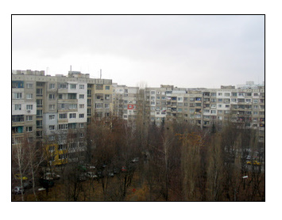
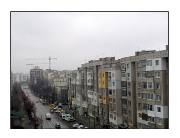

How I wrote "Buying Lenin"
When "Buying Lenin" was chosen for inclusion in the 2008 Best American I was asked to provide a brief description of how the story came into existence. If you look at the end of the anthology you will notice that, as usual, the more established the writer, the longer their bio, the shorter their description of how the story was written. My description is absurdly long, but it seems that readers enjoy it, so I decided to post it below.
I took the pictures from the main balcony of our apartment in
the neighborhood of Liulin, Sofia, on a cold, gray day in December.
The apartment complexes are old and ugly, but everything looks much
better in the summer when the grass and the trees are green, and the
Vitosha mountain is not covered in mist.
Factually this story is not
biographical. Like the narrator, I arrived in America after
finishing high school, but all similarities end there. My
grandfathers were in fact hurt by the communist regime, and let's
face it the narrator losing his parents is just a cheap writer's
trick. All emotions, though, I drew from my own life.
I spent the summer of 2005 back home, in Bulgaria. My parents have
an apartment in the outskirts of Sofia, in one of those
neighborhoods you might see

in movies like "Moscow Doesn't Believe in Tears" or documentaries about the ghost towns around Chernobyl. I was walking down the street, looking at the long, tall, gray apartment buildings, and they seemed awfully ugly to me. I knew that one of my grandfathers had spent a portion of his life building just such buildings and it occurred to me that he must have looked upon them with different eyes. Surely he had seen promise and beauty in the creations of his own hands.The first line of the story came to me then, verbatim as it is now. Wouldn't it be funny, I thought, to write about the two ends of the chain an old man painfully obsessed with his ideals and past, and his grandson fighting to escape this same past and these same ideals? I knew that grandfather and grandson would come together in the end and that a strange, absurd cause would unite them. Wouldn't it be funny, I wondered, if someone tried to sell Lenin's body on eBay, and if someone else could buy that body? What an awful capitalist
thing to do.
I wrote a version of the story in two days and thought that was that. I had not bothered to fulfill my initial idea, and now this was the story of an old communist fanatic, whom I, as a writer, had failed to take seriously. I had left him a character in a twelve page story.
I presented the story in my first MFA workshop, and most of my friends liked it fine. At the back of her copy Ellen Gilchrist, who then led the workshop, had written only "send it out for publication."
A week after that a visiting writer I admire greatly came to our program. He liked the opening paragraph, but said the story ought to be about the grandson.

He said the story, in its present form, was a political allegory no one would read. The characters, he said, came from a world where people worry if there will be food on the table. In America, he said, people worried about new cars. It's never too late, he told me, to go back to your undergraduate Psychology major and geta master's.
Instead, I expanded the story, put much more of the grandson in and thought that was that. My workshop hated the new version. They said the grandfather had lost much of his charm and eccentricity. I rewrote again. I was, as Americans might say, frustrated. I printed all scenes on separate pages and spread the pages across the floor, and rearranged, and rearranged, and in the end felt like a fool. I let a month go by, then sat down and wrote two more scenes. Hunting for crawfish, which I knew my great-grandfather had loved to do, and the final letter. It is a preachy letter, sentimental, as workshop folk might say. But as I wrote it, I wept. I was the grandson, away, facing death, alone. It is an awful thing to weep along with the characters you write. It is a terrifying blessing.
I thank my friends for their advice, Bret Lott for publishing the story and Donna Perreault for her thoughtful edits. I thank the editors of this series for choosing my work. I thank you for reading it.
East of the West: Table of Contents
There are eight stories in East of the West. Here you can find either the opening paragraph of each or an excerpt that I thought captures the story's voice.
Introduction
Makedonija
East of the West
Buying Lenin
The Letter
A Picture With Yuki
Cross Thieves
The Night Horizon
Devshirmeh
First Bulgarian Empire* Brief Timeline